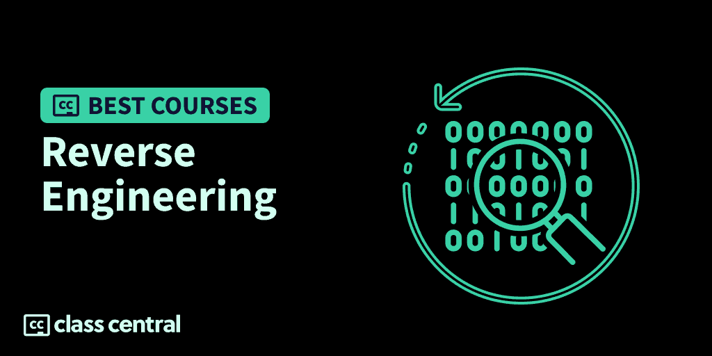

9 Best Reverse Engineering Courses to Take in 2023
Here is a guide with the best online courses to learn Software Reverse Engineering (SRE), a valuable tool for malware analysts, security researchers, and forensics investigators.

Software reverse engineering is the practice of analyzing a software system to extract design patterns and implementation information. This involves studying the program’s code (usually a low-level assembly or bytecode) to understand its behavior and functions.
If you are looking for the best online courses to learn Software Reverse Engineering (SRE), I’ve made this guide with my top picks. Click on one to skip to the course details:
| Course | Workload | In Brief |
| 1. Introduction to Reverse Engineering with Ghidra (Hackaday) | 4 hours | Best free course on using Ghidra for beginners |
| 2. Reverse Engineering 101 (Malware Unicorn) | 4–5 hours | Best free text based course with hands on labs from a trusted industry leader |
| 3. Windows Reversing Intro (TryHackMe) | N/A | Best free text and exercise based intro to Windows RE using IDA |
| 4. Reverse Engineering for Beginners (begin.re) | N/A | Free text/slide based course for beginners with hands-on exercises |
| 5. Reverse Engineering Malware with Ghidra (Pluralsight) | 1–2 hours | Best paid RE course using Ghidra with focus on Malware Analysis |
| 6. Reverse Engineering For Everyone! (Kevin Thomas) | N/A | Free GitBook collection of 6 text based courses on x86, arm32, x64, arm64 RE |
| 7. Intro to Malware Analysis and Reverse Engineering (Cybrary) | 9–10 hours | Paid course with a focus on reverse engineering malware |
| 8. Security for Hackers and Developers: Reverse Engineering (Pluralsight) | 2–3 hours | Paid course with a focus on reverse engineering malware with IDA Pro |
| 9. Reverse Engineering Linux 32-bit Applications (PentesterAcademy) | N/A | Best course on 32 bit Linux RE and malware analysis. |
What is (Software) Reverse Engineering?
Reverse engineering is the process of taking an object apart and understanding its design and functionality in order to understand how it works and potentially recreate it or create something similar. This technique has been used throughout history to understand the technology (especially military) of others, from the Ancient Egyptians capturing and incorporating fearsome Assyrian chariots into their own army, to more recent examples when the Soviets reversed engineered American planes and vice versa.
In the information age, a new form of reverse engineering has emerged: Software Reverse Engineering (SRE). Instead of physical technology, digital technology can be taken apart and analyzed for information. This involves studying the program’s code and internal operations to understand its behavior and functions. Often, only the compiled machine code or bytecode is available, making it a challenge to translate low-level abstractions back into higher-level concepts.
SRE is a valuable tool for malware analysts and security researchers. They can use it to create patches and fix bugs in existing software. Analysts can even turn the tool against hackers and find vulnerabilities in malware.
If you’re interested in working in the cybersecurity field, or if you’re curious about how some piece of software works under the hood (but don’t violate any licensing agreements), learning SRE can be a useful skill to have.

Best Courses Guides Methodology
I built this ranking following the now tried-and-tested methodology used in previous Best Courses Guides (you can find them all here). It involves a three-step process:
- Research: I started by leveraging Class Central’s database with 100K online courses and 200K+ reviews. Then, I made a preliminary selection of 40+ Reverse Engineering courses by rating, reviews, and bookmarks.
- Evaluate: I read through reviews on Class Central, Reddit, and course providers to understand what other learners thought about each course and combined it with my own experience as a learner.
- Select: Well-made courses were picked if they presented valuable and engaging content and they have to fit in a set of criteria and be ranked accordingly: comprehensive curriculum, affordability, release date, ratings and enrollments.
Course Ranking Statistics
Here are some aggregate stats about the ranking:
- 2.5K learners are following the Reverse Engineering Courses on Class Central.
- All of the courses in this ranking are free or have free trial, except for two.
- All of the courses in this ranking expect some familiarity with programming.
Without further ado, let’s go through the top picks.
1. Introduction to Reverse Engineering with Ghidra (Hackaday)

My first pick for the best Software Reverse Engineering (SRE) course is Introduction to Reverse Engineering with Ghidra on Hackaday.
This free course will teach you how to reverse engineer software using Ghidra, a free software reverse engineering tool developed by the NSA. By the end of the course, you’ll have a good understanding of x86_64 architecture for Linux and be able to use different methodologies and approaches when reverse engineering an unknown program.
To take this course, you’ll need experience with C programming and assembly language.
What You’ll Learn
To reverse engineer a software, you’ll need to know how software is engineered in the first place. You’ll discuss how software is built and compiled, starting from high-level languages such as C and ending with machine code. Then, you’ll have your first hands-on with Ghidra where you’ll disassemble compiled bytecode to reconstruct x86 assembly-level instructions from it.
But this will require in-depth knowledge of how C code is translated into assembly code. Therefore, this course includes examples of control flow, switch, loops, variables, functions, heaps, arrays, enums, pointers, and other common C constructs in assembly.
Next, you’ll survey the landscape of reverse engineering tools and compare the pros and cons between them. You’ll also learn how to patch binaries to modify a compiled program’s behavior and OS concepts such as system calls. Finally, you’ll learn some of the more advanced features of Ghidra, such as loading external libraries, performing patch analysis and diffing, and generating checksums.
How You’ll Learn
This course is 4 sessions long, with each session taking one hour. Each session comes with a set of exercises to be completed along with solution walkthroughs to help you put theory to practice.
| Provider | Hackaday |
| Instructors | Matthew Alt |
| Level | Beginner |
| Workload | 4 hours |
| Views | 57K |
| Certificate | None |
Fun Facts
- Matthew Alt is security researcher at Caesar Creek Software. He specializes in reverse engineering embedded systems and provides training and assessments through Floyd Star Security.
If you’re interested in this course, you can find more information about the course and how to enroll here.
2. Reverse Engineering 101 (Malware Unicorn)

My second pick for the best Reverse Engineering course is Reverse Engineering 101 hosted by Malware Unicorn.
This free hands-on workshop will teach you the fundamentals of reverse engineering x86 Windows malware. You’ll set up your own malware analysis environment and learn about operating systems and assembly concepts. You’ll also get to analyze malware hands-on using triage, static, and dynamic analysis.
To take this course, you’ll need at least 8 GB of RAM, 40 GB of storage, and an internet connection.
What You’ll Learn
You’ll begin the course by setting up a safe malware analysis environment where you’ll use VirtualBox to create a Virtual Machine. Then, you’ll go over operating system and assembly concepts, studying the anatomy of a typical Portable Executable Windows Program and dissecting C-compiled assembly code.
Next, you’ll cover the typical attack flow of malware, their types, and their ways of getting into a system and hiding themselves. You’ll also get to know some of the popular Reverse Engineering tools like disassemblers and debuggers to use in your lab.
Afterward, you’ll be given several hands-on lab exercises to teach you the common methodologies and approaches used in malware analysis. First, you’ll learn how to gather information about the malware, like how it got there in the first place. Then, you’ll use triage analysis to identify the malware’s characteristics, before performing static and dynamic analysis. Static analysis involves analyzing without execution by looking at the overlying code, while dynamic analysis will need the malware to be run to help you understand the underlying hidden functionality and behavior.
How You’ll Learn
This course is 4–5 hours long. You’ll learn by going through the course articles and trying your hand at the lab exercises.
| Provider | Malware Unicorn |
| Instructor | Amanda Rousseau |
| Level | Beginner |
| Workload | 4–5 hours |
| Certificate | None |
Fun Facts
- The course has 191 bookmarks on Class Central.
- Malwareunicorn.org offers workshops and resources for reverse engineering in the information security space. They currently have 6 workshops available.
- Amanda Rousseau is an Offensive Security Engineer on the Red Team at Facebook with a passion for malware. She has previously worked as a Malware Researcher for Endgame, FireEye, and the U.S. Department of Defense Cyber Crime Center.
If you’re interested in this course, you can find more information about the course and how to enroll here.
3. Windows Reversing Intro (TryHackMe)

My third pick for the best Reverse Engineering course is the Windows Reversing Intro lab on TryHackMe.
This free hands-on course introduces students to reverse engineering software on Windows. You’ll cover high-level concepts at a lower level and also be introduced to IDA, a popular reverse engineering tool, through the virtual machine provided (or on your own machine, if you’d like). By the end of this course, you’ll be able to perform more advanced reverse engineering techniques.
What You’ll Learn
You’ll start the course by getting an overview of the IDA functionalities, specifically disassembling, decompiling, and debugging. Then, you’ll learn about functions and their stack frames, and see how you can exploit the popping and pushing of frames to modify the program. This will involve deeply analyzing how functions and loops look in assembly language.
Stacks are one example of data structures that groups together related variables. You can find many other data structures like arrays and classes since Windows is highly object-oriented. You’ll learn how to identify these structures in assembly code.
You’ll also learn how to unmangle garbled C++ function names when reading DLLs.
How You’ll Learn
This course consists of 8 tasks. You’ll learn by going through the tasks one by one and completing them on a virtual machine.
| Provider | TryHackMe |
| Level | Beginner |
| Workload | N/A |
| Enrollments | 2.3K |
| Likes | 140 |
| Certificate | None |
Fun Facts
- TryHackMe is an online platform for learning cybersecurity. It was founded in 2018 by Ashu Savani and Ben Spring, who both found learning cybersecurity to be an arduous process.
- The platform (which is entirely free) provides short gamified cyber security labs for ethical hackers of all skill levels. Learners can join virtual rooms offering lessons that touch on theoretical and practical learning components.
- The previous room in this course is Windows x64 Assembly.
If you’re interested in this course, you can find more information about the course and how to enroll here.
4. Reverse Engineering for Beginners (begin.re)

Reverse Engineering for Beginners is a free workshop covering reverse engineering. By the end of this course, you’ll have a thorough understanding of reverse engineering and the tools used by reverse engineers.
No prior knowledge of reverse engineering or x86 assembly code is required to take this course, though knowledge of C programming is recommended.
What You’ll Learn
First, you’ll start with an introduction to reverse engineering and what it pertains, along with some basic overview of ASM x86 instructions. Then, you’ll be introduced to the call stack, a common data structure used to store information about active subroutines, and learn how to manipulate information stored on the stack using a debugger.
Next, you’ll set up IDA on your machine and use it to study x86 architecture and assembly code of programs in further detail. You’ll then practice reverse engineering using IDA by completing challenging playground exercises as well as a guided project where you’ll reverse engineer Microsoft’s famous Minesweeper game.
How You’ll Learn
The workshop consists of 3 preparation assignments and 5 sessions. You’ll learn by reading the course articles, the course slides, and trying out the reverse engineering challenges and projects given.
| Website | begin.re |
| Instructor | Ophir Harpaz |
| Level | Beginner |
| Workload | N/A |
| Certificate | None |
Fun Facts
- Ophir Harpaz is a security researcher at Guardicore. She enjoys reverse engineering in her free time, and attended the Luxembourg BlackHoodie reverse engineering workshop for women in 2017. Along with her friend Dafna Rosenblum, they organized the Low Level & Security Celebration in Israel in 2018, where they taught a reverse engineering workshop — the one you’re reading right now!
If you’re interested in this course, you can find more information about the course and how to enroll here.
5. Reverse Engineering Malware with Ghidra (Pluralsight)

Reverse Engineering Malware with Ghidra covers the use of Ghidra, a software reverse engineering tool, to analyze and understand the inner workings of software and malware. By the end of the paid course with free trial, you will have a solid foundation in reverse engineering and the use of Ghidra for SRE.
Before beginning the course, you should know the basics of reverse engineering, be comfortable with tools such as disassemblers and assembly-level debuggers, and be able to set up a safe malware analysis lab.
What You’ll Learn
You’ll start this course by exploring Ghidra’s core components to effectively utilize its software reverse engineering tools. You’ll first understand what malware packing, obfuscation, and other techniques used to protect software is. Then, you’ll learn how to use the decompiler and function analysis tool to unpack malware. Finally, the course covers advanced techniques for enhancing your reversing workflow, such as using Ghidra’s code browser and headless analyzer, and writing custom scripts.
How You’ll Learn
This course is 1–2 hours long. You’ll learn by watching the lecture videos and following along with the demonstration labs.
| Provider | Pluralsight |
| Instructor | Josh Stroschein |
| Level | Intermediate |
| Workload | 1–2 hours |
| Rating | 4.5 / 5.0 (39) |
| Certificate | Paid |
Fun Facts
- Josh Stroschein is an experienced malware analyst and reverse engineer who works for Google’s Chronicle division. He is a trainer and author who focuses on security topics, and has provided training at various conferences and venues, like Ring Zero, BlackHat, Defcon, Toorcon, Hack-In-The-Box, and Surico.
If you’re interested in this course, you can find more information about the course and how to enroll here.
6. Reverse Engineering For Everyone! (Kevin Thomas)

Reverse Engineering For Everyone! is a free comprehensive reverse engineering tutorial covering x86, x64, 32-bit ARM & 64-bit ARM architectures. Yes, all of them!
These tutorials will carry you from nothing up to the mid-basics of reverse engineering.
No prior knowledge of reverse engineering is needed to take this course.
What You’ll Learn
- x86 and x64 architectures tutorials:
- You’ll learn about processor architectures, including registers and memory management. You’ll also learn assembly language and take a careful look at stacks and heaps. With this knowledge, you’ll be equipped with reversing engineering knowledge to identify malware with static and dynamic analysis, and then debug and reverse engineer them.
- Specifically for the x64 course, you’ll learn how the boot sector works and how it can be exploited, as well as look at various C programs translated into assembly code.
- 32-bit and 64-bit ARM architectures tutorials:
- You’ll learn the ARM-32 bit architecture. You’ll take a look at the Von Neumann architecture, the instruction pipeline, as well as the registers involved. You’ll also write very basic C++ programs and then reverse them one at a time into ARM instructions. Then, you’ll learn how to debug and override these instructions.
How You’ll Learn
This course consists of 4 sections on Intel and ARM architecture. You’ll learn by reading the course articles, replicating the code examples on your Virtual Machine, and doing the course projects.
| Provider | GitHub |
| Instructor | Kevin Thomas |
| Level | Beginner |
| Workload | N/A |
| Certificate | None |
Fun Facts
- You can find the GitHub repository of the course here.
- You can find his Discord server to meet other reverse engineers here.
If you’re interested in this course, you can find more information about the course and how to enroll here.
7. Intro to Malware Analysis and Reverse Engineering (Cybrary)

Intro to Malware Analysis and Reverse Engineering on Cybrary will give you the knowledge and skills needed to combat malware targeted towards organizations. It is designed for beginners in information technology to help prepare them for the Certified Ethical Hacker (CEH) exam.
You’ll analyze and understand common malware tactics using reverse engineering, and then learn how to identify, isolate, and defend against these threats using malware analysis and reverse engineering tools.
No prior experience with programming or knowledge of assembly is required to take this course with free limited access. But, it is recommended that you have a general understanding of Networking, Operating System Internals, Programming, and Hacking.
What You’ll Learn
Antivirus software isn’t enough! You’ll begin the course by discussing its limitations and why malware analysis (and having incident response teams) is so important to detect and prevent security breaches. Then, you’ll set up a malware analysis lab, which will involve running a Windows XP Virtual Machine and funneling traffic to a Kali Linux VM.
Once you have your malware environment ready, you’ll study dynamic analysis to identify different types of malware in real-time, as well as assess its potential risk and impact. With dynamic analysis, you will be able to quickly identify indicators of compromise in a system.
You’ll also learn how to perform basic static analysis to analyze the code and functionality of malware without executing it by debugging and disassembling them. A hybrid approach using the two analysis methods will serve the greatest function for identifying malware.
Then, you’ll learn about packers, which are tools used to compress and encrypt malware to evade detection by antivirus software and make it more difficult to analyze, such as disguising themselves as legitimate software. Finally, more advanced malware are able to defend themselves against virtual machines, disassembly, and other tools you’ve learned so far. Fortunately, you’ll learn how to bypass these defenses by studying more advanced techniques.
How You’ll Learn
There are 7 modules altogether in the course, with the course being 9–10 hours long. You’ll learn by watching the lectures and completing the hands-on lab exercises to give you practical experience on analyzing malware.
| Provider | Cybrary |
| Instructor | Sean Pierce |
| Level | Advanced |
| Workload | 9–10 hours |
| Rating | 4.1 / 5.0 |
| Certificate | Paid |
Fun Facts
- The course has 1.1K bookmarks on Cybrary.
- Sean Pierce is a lead red team engineer at Target. He has a number of certifications, including the SSCP, and has worked as a malware analyst for several years.
- This course is a part of the Become a SOC Analyst – Level 3 Career Path.
If you’re interested in this course, you can find more information about the course and how to enroll here.
8. Security for Hackers and Developers: Reverse Engineering (Pluralsight)

Security for Hackers and Developers: Reverse Engineering is another course on Pluralsight that teaches you how to reverse engineer programs (including malware) through hands-on demos with IDA and Binary Ninja, both popular tools among reverse engineers. By the end of the paid course with free trial, you’ll know how to reverse engineer C and C++ programs with confidence.
What You’ll Learn
The first thing you’ll do in this course is setting up IDA Pro on your computer. You’ll learn its functions and then use it to find passwords in an application. Then, you’ll learn x86 assembly code, the lowest level of abstraction there is. You’ll take a quiz on assembly code and recall its calling conventions.
The reason you’re looking at assembly in the first place is not to write it, but to analyze programs that have been compiled from high-level languages such as C and C++. You’ll study common examples of C code and its corresponding assembly code, and learn how to use binary patching to fix security vulnerabilities in compiled programs. And in the last section of the course, you’ll learn how to customize IDA with scripts to improve your efficiency and productivity.
How You’ll Learn
This course is 2–3 hours long. You’ll learn by watching the lecture videos and participating in the labs and demos.
| Provider | Pluralsight |
| Instructor | Jared DeMott |
| Level | Intermediate |
| Workload | 2–3 hours |
| Rating | 4.0 / 5.0 (53) |
| Certificate | Paid |
Fun Facts
- This is the fourth course in the Security Hackers and Developers learning path.
- Jared DeMott is an engineer and security leader. He previously worked as a vulnerability analyst with the NSA, and regularly speaks on cyber matters at conferences like DerbyCon, BlackHat, and HITB. He has been on three winning Defcon capture-the-flag teams and was a finalist in Microsoft’s BlueHat prize contest.
If you’re interested in this course, you can find more information about the course and how to enroll here.
9. Reverse Engineering Linux 32-bit Applications (PentesterAcademy)

PenTesterAcademy’s Reverse Engineering Linux 32-bit Applications course provides a comprehensive overview of reverse engineering Linux 32-bit applications.
By the end of this paid course, you’ll become familiar with how Linux applications work and their common flaws, how to locate these flaws manually or automatically with common reversing tools such as debuggers, fuzzers, Python scripts, and other scripting tools.
What You’ll Learn
The course begins by introducing you to the concepts and tools needed for reverse engineering Linux 32-bit applications, like virtualization to create a safe testing environment for reverse engineering, along with other tools like IDA Pro or freeware Linux debuggers, scripting tools, decompilers, and fuzzers.
Assembly is needed to reverse engineer compiled bytecode as well as understand common security flaws. You’ll learn the basics of 32-bit Intel Assembly and calling conventions used by Linux to locate, deliver payloads, and exploit stack overflows, heap overflows, section overflows, first string flaws, and kernel flaws.
Discovering flaws manually can be tiring. So, you’ll learn how to automate your work using tools such as Python and shell scripting to make you a much more productive reverse engineer. You’ll also study other concepts, like shellcoding and Metasploit to exploit modules.
How You’ll Learn
This course consists of 44 videos, each covering a separate topic. You’ll learn by watching the lecture videos and replicating the in-course demonstrations of the tools being used.
| Provider | PentesterAcademy |
| Instructor | Philip Polstra |
| Level | Beginner |
| Workload | N/A |
| Certificate | None |
Fun Facts
- Philip Polstra is an associate professor of digital forensics at Bloomsburg University of Pennsylvania. He is an expert in hardware hacking and information security and has presented at hacking conferences such as DEFCON and Blackhat, He is known for his work on developing small, affordable hacking devices and on USB hacking and forensics. He has even written a book about it, called Linux Forensics.
If you’re interested in this course, you can find more information about the course and how to enroll here.